New ChatOpen full image
{kind=link}
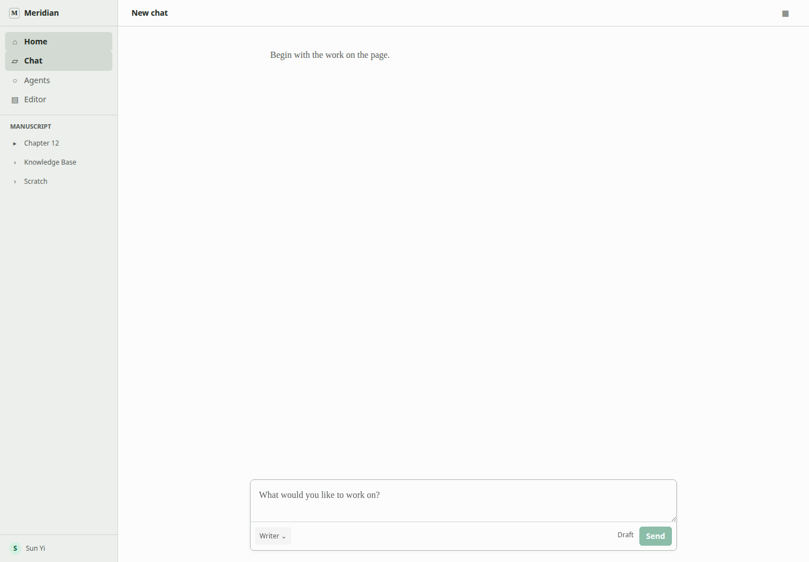
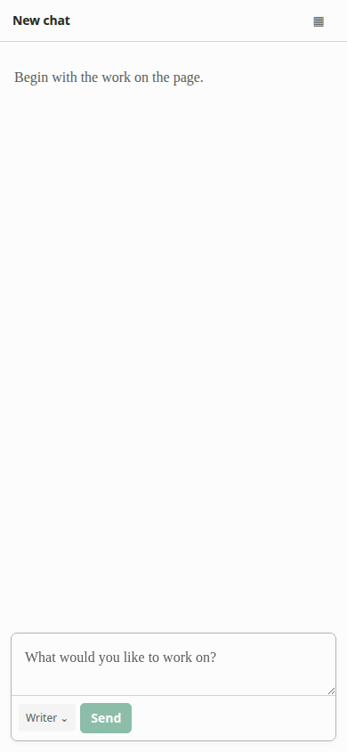
Experience
Agent UX has two owners. New Chat has draft selection and first Send. Agents has inventory and authoring. After first Send, the Agent is a single inert fact while the normal transcript carries activity, prose, receipt, and Undo.
| Surface | Owns | Never owns |
|---|---|---|
| New Chat | Draft Agent choice, conditional Work choice, first Send | Definition editing, package management, runtime details |
| Agents | Inventory, detail, create or edit, import or export, exceptional setup | Starting chats, testing Agents, active runs |
| Existing chat | One bound-Agent fact, writer input, current turn, outcomes | Switching Agent or Work, definition editing, package state |
| Import review | Local source validation, included Agents, actual errors, one Import | Registry browsing, launch, generic compatibility ceremony |
Keep the current blank chat, composer, Agent control, mode control, and Send. A single-Work project has no Work control. Picker rows show name, purpose, and a concrete blocker only when unavailable.


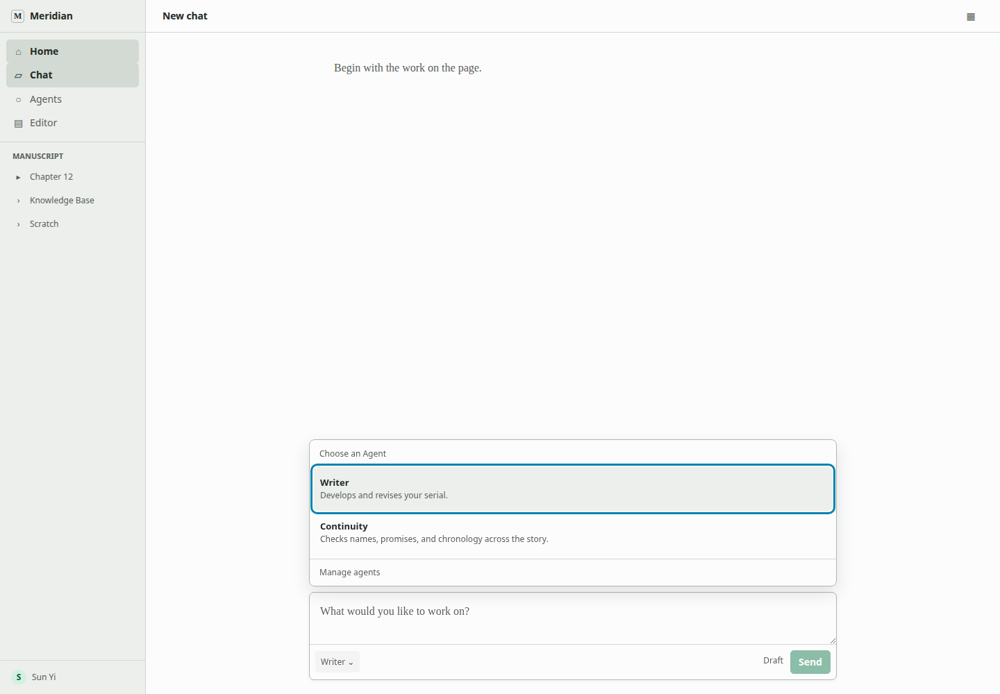
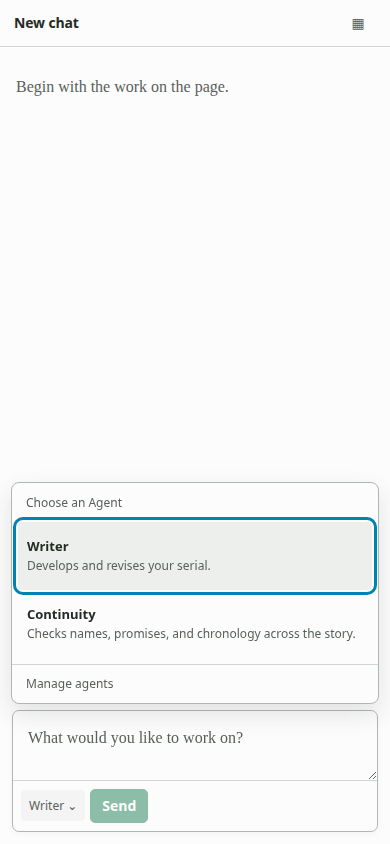
Healthy rows stay silent. Detail answers purpose, manuscript access, blocker if any, and whether the Agent can be edited. Detail exposes Edit only; quiet More contains Export and ownership-permitted Delete. The four-field editor contains no persistent version-impact explanation. That impact appears only in a success message after relevant edits.
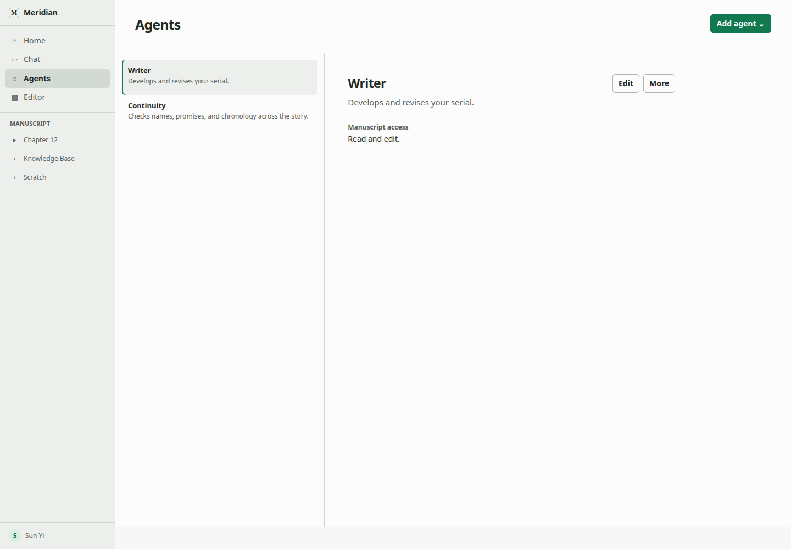
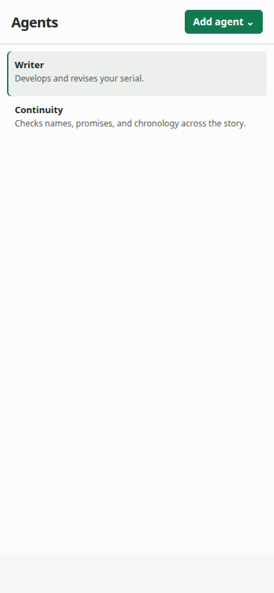
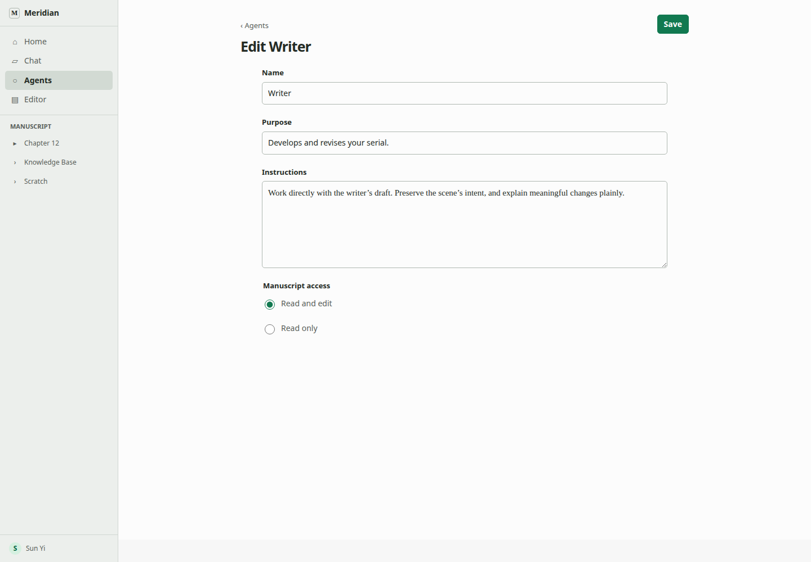
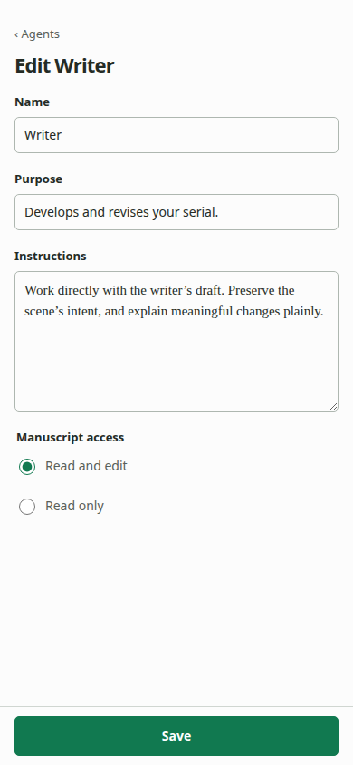
Import review lists package name when present, included Agents and purposes, exact invalid fields or unsupported semantics, and logical-key collisions. Healthy compatibility is silent. There is one Import action when valid.
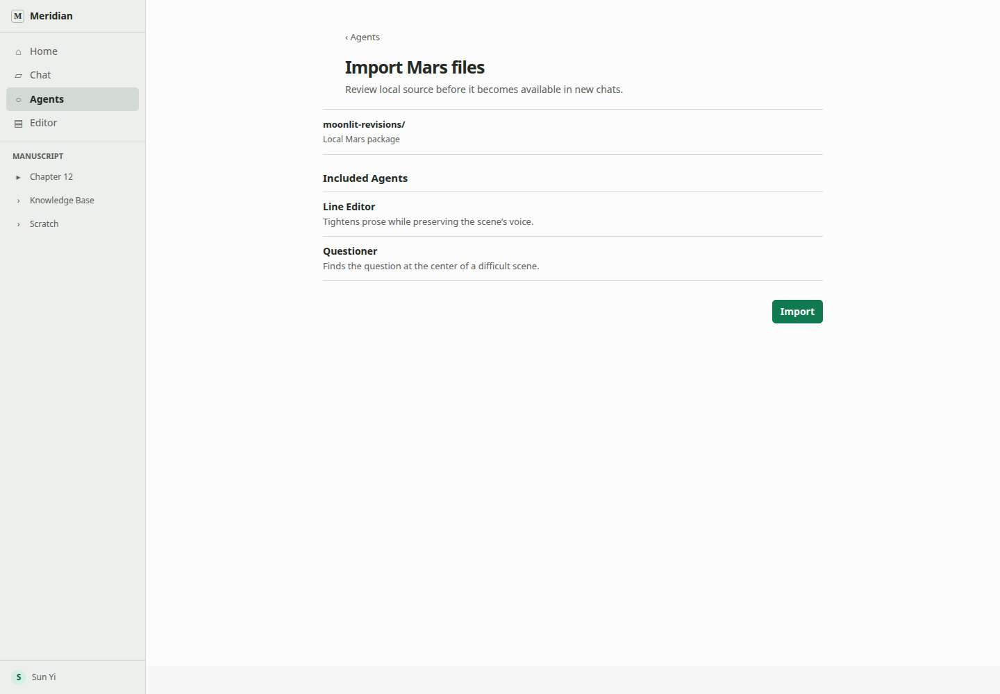
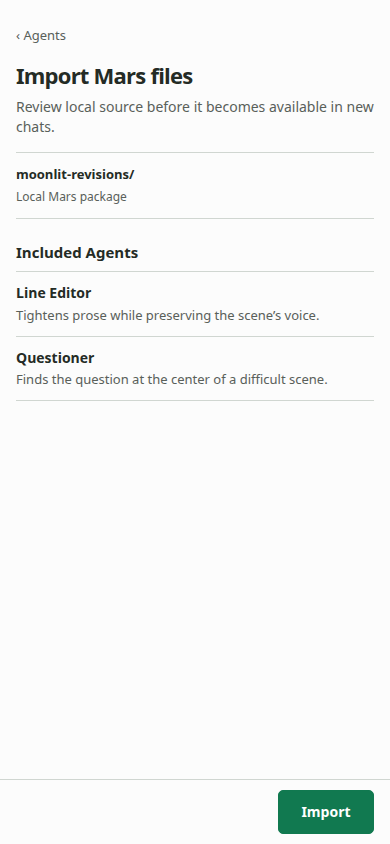
Reuse ProcessDisclosure and ActivityRow while running. Once settled, assistant prose comes first. The existing TurnEditsReceipt follows only if documents changed. No edit means no no-op receipt.
No Sources and effects, Helpers consulted, or Run details. No Agent identity in both header and composer. No task center, progress percentage, helper card, or background control.
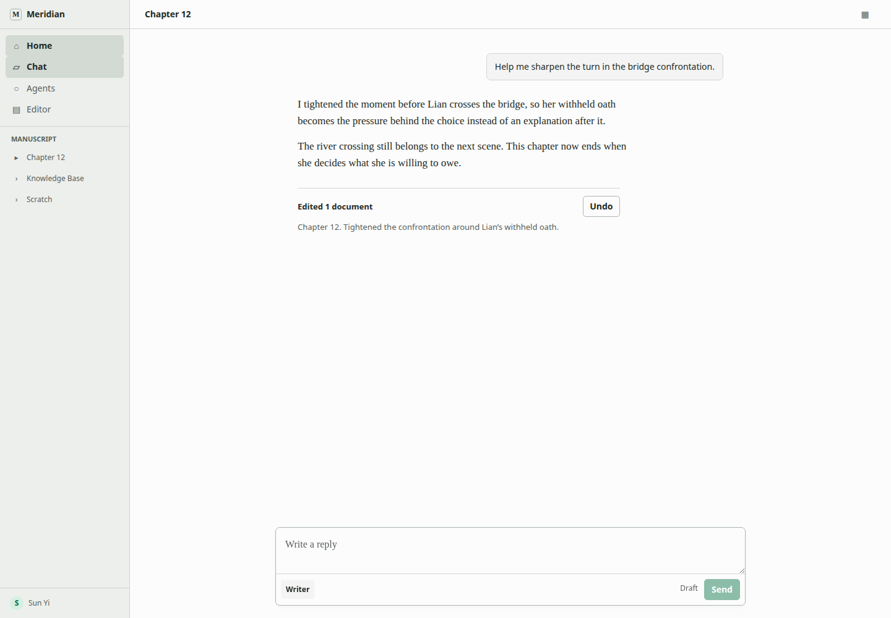
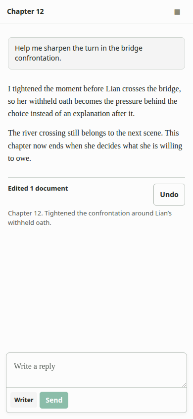
| State | Writer sees | Writer can do |
|---|---|---|
| Unavailable Agent | Name, purpose, one concrete blocker | Follow recovery without losing draft |
| First Send failed | Local error next to failed selection or composer action | Correct or retry with draft intact |
| Active turn | One current phrase and Cancel only while it can affect the turn | Read or cancel |
| No-edit answer | Assistant prose | Continue conversation |
| Edited answer | Assistant prose then existing receipt and Undo | Inspect or undo |
{kind=link}
{kind=link}
{kind=link}
{kind=link}
{kind=link}